VisioPatch turns a screen recording of a visual web bug into a verified code fix. A video goes through SAM 3.1 for object tracking, Muse Spark 1.3 to identify the wrong frame and bounding box, Muse Wonder for root-cause diagnosis and deterministic Playwright test generation (Gate 1: must fail on buggy build), then muse exec fans out 3 candidate fixes in isolated worktrees, shipping only a fix that passes both the generated test and the existing test suite (Gate 2).
| Case | Source | Diagnosis Match | Suspect File Hit | Gate 1 | Gate 2 | Picked Strategy | Lines Changed |
|---|---|---|---|---|---|---|---|
| k1174 | kaplayjs/kaplay PR 1174 | yes | yes | pass | pass | Momentum impulse in physics-resolve handler | 35 |
| k950 | kaplayjs/kaplay PR 950 | yes | yes | pass | pass | Pad and offset atlas rasterization | 69 |
| k864 | kaplayjs/kaplay PR 864 | yes | yes | pass | pass | Skip only the degenerate slice | 2 |
| k658 | kaplayjs/kaplay PR 658 | yes | yes | fail | n/a | none | 0 |
| d1-modal-zindex | hand-written DOM | yes | yes | pass | pass | Remove the stacking context from main | 2 |
| d2-carousel-drift | hand-written DOM | yes | yes | fail | n/a | none | 0 |
src/ecs/components/physics/body.ts)
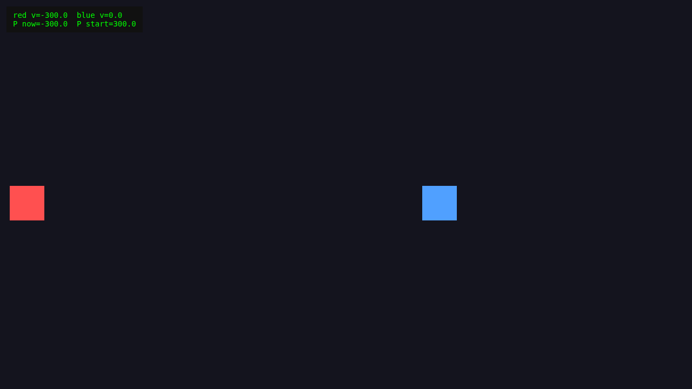
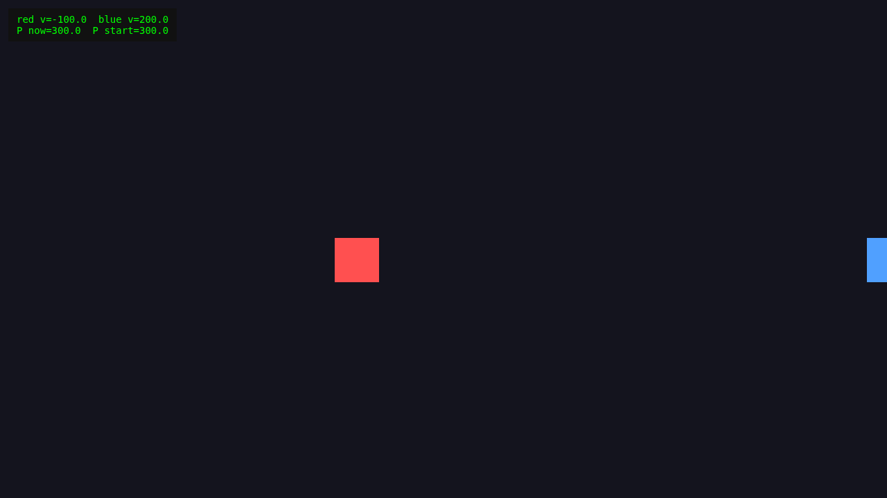
src/ecs/components/physics/body.ts<main>. When scrolled down, the modal title bar disappears behind the sticky header (z-index 100) despite having z-index 9999.
transform: translateZ(0) on <main> creates a CSS stacking context that confines the modal's z-index: 9999 inside <main>, allowing the header's root-level z-index: 100 to paint over the modal.
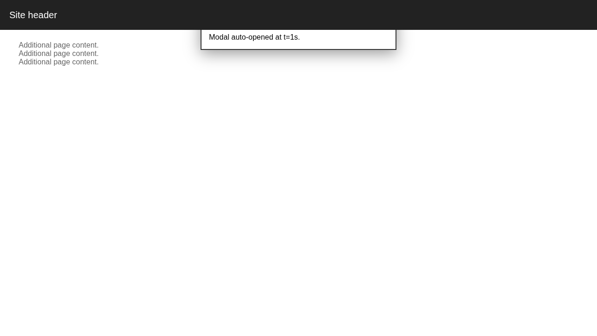
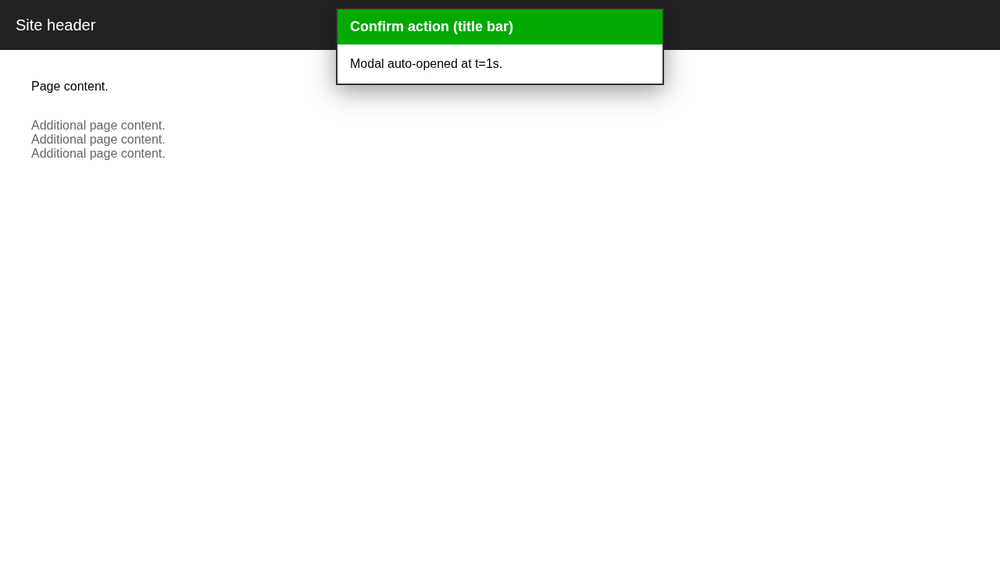
index.htmlupdateFontAtlas rasterizes glyphs with textBaseline="top" and crops only actualBoundingBoxAscent + actualBoundingBoxDescent from y=0, cropping glyph ascenders outside the captured tile.
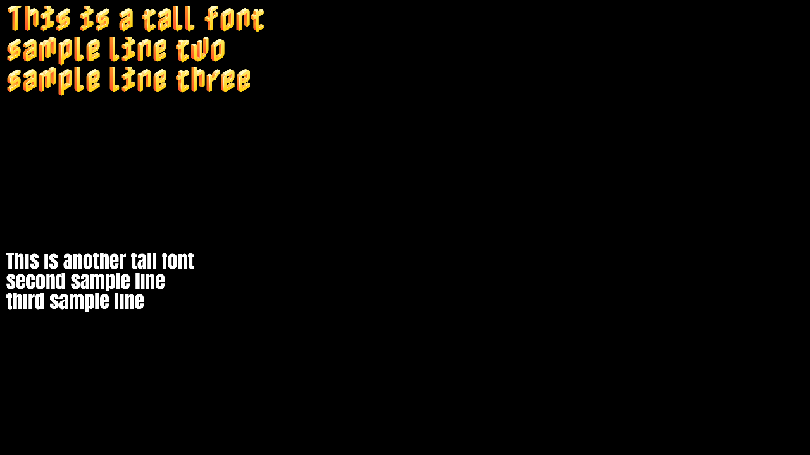
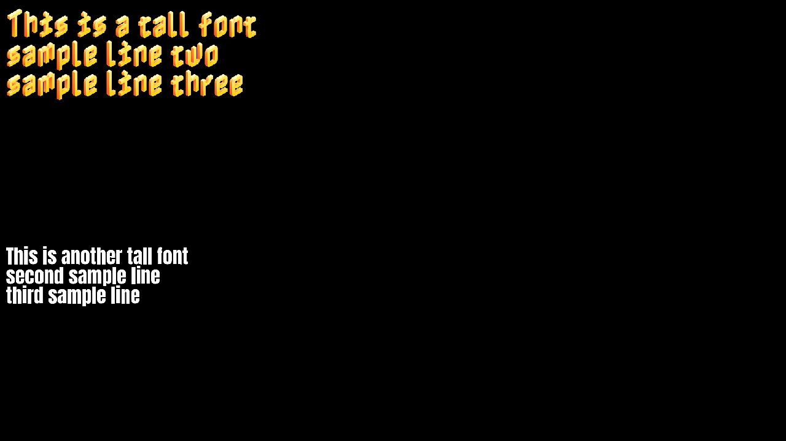
src/core/fontCache.ts & src/gfx/formatText.tsreturn; instead of continue;, aborting the whole draw call.
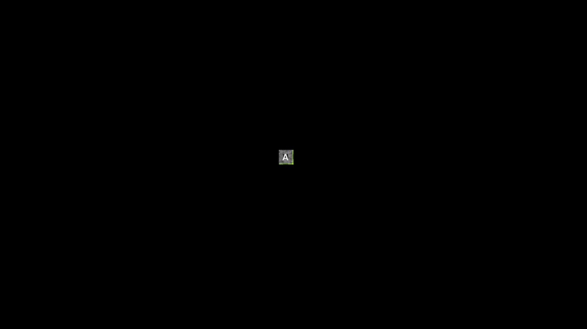
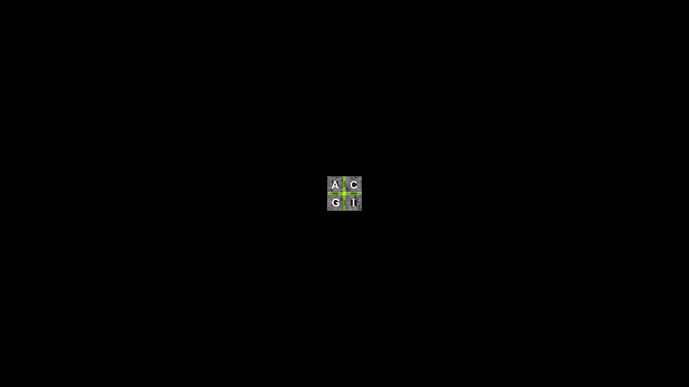
src/ecs/components/draw/sprite.ts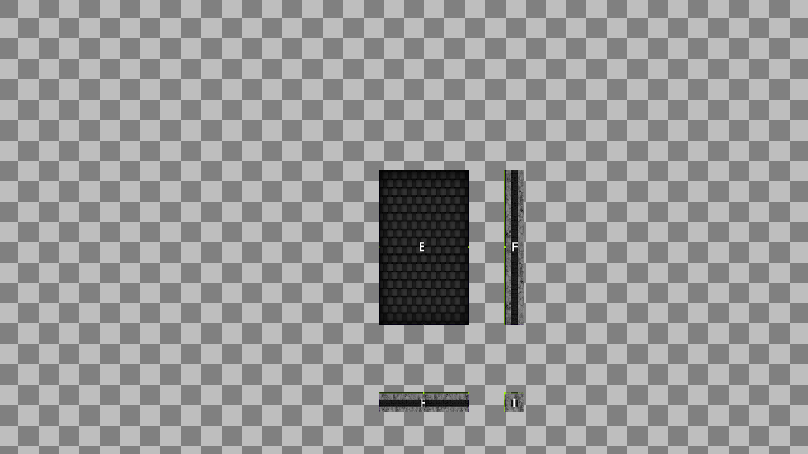
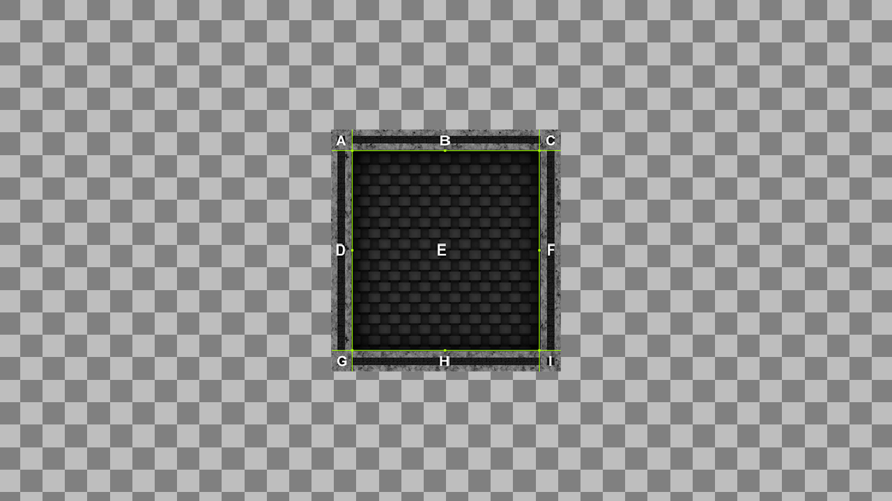
Math.round(1000/3)=333px while each card is 333.333px wide; the 1/3px error accumulates in persistent offset instead of computing index * (containerWidth / 3). (Diagnosis matched 100%)
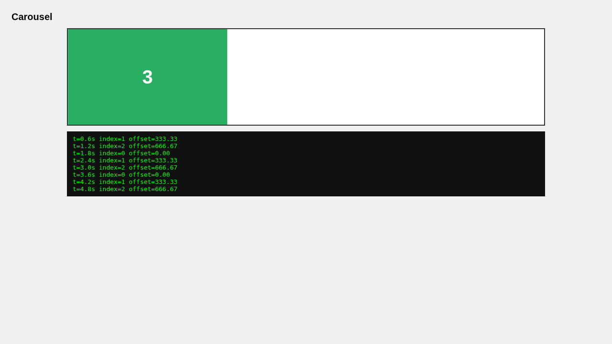